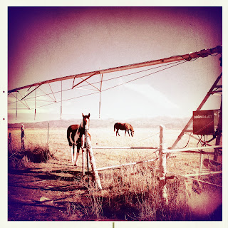

Recovered weblog entry
The Old With the New

Out in the valley, seeing what could be sought after, I found these horses hanging around a brand-new pivot sprinkler.
Time rolls along, even in the valley of the San Pitch.
Lens: Libatique 73
Film: Alfred Infrared